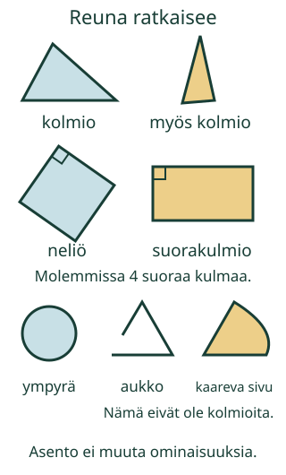

<link rel="stylesheet" href="lesson.css" />


<section data-teaching-step="1" data-lesson-role="teaching-step">
<section class="lesson-intro"><h2>Mikä muuttui, kun kuvio kääntyi?</h2><p>Loikka etsii kylttipajaan kolmion muotoista laattaa. Kelpaako myös kapea kolmio tai kolmio, jonka kärki osoittaa sivulle?</p><p><strong>Tutkin kuvion reunan ja löydän sopivan nimen, vaikka kuvio kääntyy.</strong></p></section>
</section>


<section>
<section data-teaching-step="2" data-lesson-role="teaching-step">
<h2>Tunnustele, seuraa ja käännä</h2><p>Ota pahvikolmio. Kulje sormella sen reunaa pitkin. Siinä on kolme suoraa sivua ja kolme kulmaa. Reuna palaa alkuun: se on suljettu. Ruudulla katsomme tasokuvioita esittäviä piirroksia. Pahvilla ja paperilla on oikeasti myös hieman paksuutta.</p><figure data-lesson-role="worked-example"><figcaption>Nimi riippuu ominaisuuksista. Väri, koko ja asento voivat vaihdella.</figcaption></figure>
</section>

<section data-teaching-step="3" data-lesson-role="teaching-step">
<h3>Esimerkki: myös kapea on kolmio</h3><p>Kolmion sivujen ei tarvitse olla yhtä pitkiä. Suljettu reuna ja kolme suoraa sivua riittävät. Kääntäminen ei lisää tai poista sivuja.</p>
</section>

<section data-teaching-step="4" data-lesson-role="teaching-step">
<h3>Esimerkki: neliö kuuluu myös suorakulmioihin</h3><p>Suorakulmiossa on neljä suoraa kulmaa, samanlaisia kuin tavallisen paperiarkin nurkka. Neliössä on niiden lisäksi neljä yhtä pitkää sivua. <strong>Neliö on siis myös suorakulmio.</strong> Kaikki suorakulmiot eivät ole neliöitä, sillä vierekkäiset sivut voivat olla eripituiset.</p><p>Pelkkä neljä yhtä pitkää sivua ei vielä riitä neliöksi. Katso myös kulmia: vinoilla kulmilla varustettu nelikulmio ei ole neliö, vaikka sen sivut ovat yhtä pitkät. Vertaa aikuisen kanssa paperiarkin nurkkaan.</p>
</section>

<section data-teaching-step="5" data-lesson-role="teaching-step">
<h3>Ansakohta: melkein kolmio ei aina ole kolmio</h3><p>Jos reunassa on aukko, reuna ei ole suljettu. Jos yksi sivu kaartuu, kuviossa ei ole kolmea suoraa sivua. Nämä eivät ole kolmioita, vaikka ne muistuttavat niitä.</p>
</section>

<section data-teaching-step="6" data-lesson-role="teaching-step">
<h3>Entä ympyrä?</h3><p>Ympyrän reuna on kokonaan kaareva, ilman teräviä kulmia. Reuna ulottuu joka suunnassa yhtä kauas keskeltä. Kun kynä kulkee reunaa, sen suunta muuttuu tasaisesti. Se ei tee teräviä käännöksiä. Yksi kaareva sivu ei tee koko kuviosta ympyrää.</p>
</section>
</section>


<section data-shape-lesson>
  
<section data-teaching-step="7" data-lesson-role="teaching-step">
<section><h2>Seuraa samaa reunaa</h2><p data-lesson-role="question">Ennusta: kun käännät kuviota, tuleeko siihen uusi sivu tai kulma? Valitse kuvio ja kokeile. Käännös on pieni askel kerrallaan; kuvio ei liiku itsestään.</p><label>Tutkittava kuvio<select data-shape-model><option value="triangle">Kolmio</option><option value="square">Neliö</option><option value="rectangle">Suorakulmio</option><option value="circle">Ympyrä</option><option value="rhombus">Neljä yhtä pitkää sivua, vinot kulmat</option></select></label><div data-shape-demo></div><p data-shape-demo-caption aria-live="polite"></p><p><button type="button" data-shape-step>Seuraa seuraava reunanosa</button> <button type="button" data-shape-trace-reset>Aloita reuna uudelleen</button></p><p><button type="button" data-shape-turn>Käännä vähän</button> <button type="button" data-shape-upright>Palauta asento</button></p><details data-lesson-role="hint"><summary>Apua reunan tutkimiseen</summary><p>Suora sivu kulkee samaan suuntaan koko matkan. Kulmassa suunta vaihtuu terävästi. Ympyrän kaarella suunta muuttuu jatkuvasti, ilman terävää kulmaa. Kun palaat aloituskohtaan, älä laske samaa kulmaa kahdesti.</p></details></section>
</section>

  <section>
<section data-teaching-step="8" data-lesson-role="teaching-step" id="kuvioiden-ryhmitys" data-audience-spacing="compact">
<div data-lesson-context-source="workbench" data-audience-spacing="compact">
<h2>Rakenna sääntöön sopiva ryhmä</h2><p data-shape-rule></p><p>Paina kuvioita, jotka kuuluvat ryhmään. Toinen painallus poistaa valinnan. ✓ kertoo, mikä on valittu. Voit käyttää myös näppäimistön sarkainta ja välilyöntiä.</p><div data-shape-board></div><p><button type="button" data-shape-check>Tarkista ryhmä</button> <button type="button" data-shape-clear>Poista valinnat</button> <button type="button" data-shape-rule-next>Toinen sääntö</button></p><p data-shape-feedback role="status" aria-live="polite">Tutki ominaisuuksia ja kokeile.</p><details data-lesson-role="hint"><summary>Apua ryhmittelyyn</summary><p>Katso jokainen kuvio. Sulkeutuuko reuna? Ovatko sivut suoria? Kuinka monta niitä on? Suorakulmioissa tarkista neljä suoraa kulmaa; myös neliö kuuluu mukaan. Neliössä kaikkien sivujen täytyy lisäksi olla yhtä pitkät.</p><p>Ennusta ennen vaihtoa: muuttuuko ryhmä, jos vain värit ja asennot vaihtuvat? Painike säilyttää samat kuviot ja valinnat. Voit tarkistaa ne uudelleen.</p><p><button type="button" data-shape-transfer>Vaihda värit ja asennot</button></p></details>
</div>
</section>

<section data-teaching-step="9" data-lesson-role="teaching-step">
<h3>Uusi tilanne: vaihtuuko nimi värin mukana?</h3><p>Ennusta, täytyykö valintojasi muuttaa, jos värit ja asennot vaihtuvat. Värit ja asennot voivat vaihtua, vaikka kuvioiden ominaisuudet säilyvät. Kokeile tätä alla olevassa ryhmittelyssä ja tarkista sama ryhmä uudelleen.</p><p>Avaa sama ryhmittely tähän ja avaa tarvittaessa ”Apua ryhmittelyyn”. Värien ja asentojen vaihtopainike on samassa näkymässä kuin kuviot ja tarkistus. Nykyiset valintasi säilyvät, kun avaat tai suljet ryhmittelyn.</p>

<details data-lesson-role="teaching-step" data-lesson-context="shapes-own" data-context-source="workbench"><summary>Jatka omaa ryhmittelyä tässä</summary><p data-context-fallback>Malli on ilman JavaScriptiä alkuperäisessä kohdassaan: <a href="#kuvioiden-ryhmitys">avaa mallin kohta</a>.</p><div data-context-slot></div><button type="button" data-context-close hidden>Sulje malli</button></details>
</section>
</section>
</section>


<section data-teaching-step="10" data-lesson-role="teaching-step">
<details data-lesson-role="teaching-step"><summary>Lisätutkimus</summary><p>Piirrä kaksi mahdollisimman erinäköistä kolmiota. Voiko toisessa olla hyvin kapea kulma? Voiko kärki osoittaa alas? Perustele reunaa seuraamalla. Piirrä sitten kaksi suorakulmiota, joista toinen on neliö. Mitkä ominaisuudet ovat samat?</p></details>
</section>


<details class="teacher" data-lesson-role="teacher-note"><summary>Opettajalle: tutkiminen ja rajat</summary><p>Vuosiluokat 1–2. Vaadittu esitieto on M-GEO-01, tason ja kolmiulotteisen ympäristön erottaminen. Nimet ja ominaisuudet opetetaan tässä. Kulmien astemittaa, koordinaatteja tai muodollista monikulmioteoriaa ei vaadita. Aikuinen saa lukea kysymykset, mutta lapsi voi perustella osoittamalla.</p><p>Offline: käytä ehjiä pahvikuvioita ja tavallisen paperiarkin nurkkaa suoran kulman vertailuun. Kääntäkää samaa palaa. Korosta sekä sivujen pituuksia että kulmia: neljä yhtä pitkää sivua ei yksin määritä neliötä. Sana vinoneliö ei ole tehtävän vaatimus. Neliön ja suorakulmion luokat eivät ole erillisiä vastakohtia.</p><p>Ohjelma tarkistaa annettuihin geometrisiin malleihin perustuvan ryhmän kaikki jäsenet. Oikeat valinnat eivät muutu vääriksi vain siksi, että jokin jäsen vielä puuttuu. Asennon ja värin vaihto säilyttää jäsenyyden. Se ei mittaa erilaisten nimeämismenetelmien paremmuutta.</p><p>Harjoitus on tuettua kokeilua ilman pisteitä, tallennusta, palkintoja tai mastery-päätelmää. Onnistuminen ei osoita fyysistä tunnustelua, itsenäistä piirtämistä, sanallista sujuvuutta, kaikkien tasokuvioiden tunnistamista tai pysyvää osaamista. Lapsen omat piirrokset ja perustelut havainnoidaan erikseen.</p></details>


<section data-teaching-step="11" data-lesson-role="teaching-step">
<section><h2>Lopuksi</h2><p>Näytä kolmio, joka näyttää erilaiselta kuin ensimmäinen. Mistä tiedät, että se on kolmio? Näytä myös neliö, joka kuuluu suorakulmioihin.</p></section>
</section>


